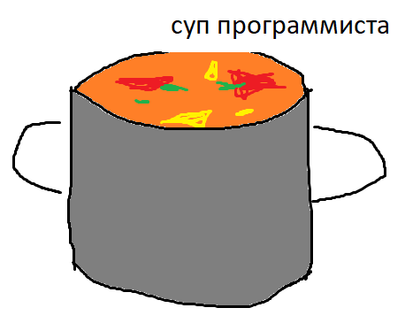

Суп программиста

Описание
Суп для граждан Российской Федерации. Подходит под суповой набор. Очень полезно для здоровья. Никакой предварительной подготовки.
Ингредиенты
- Мясо (1 кг)
- Морковь (1 шт)
- Лук (2 шт)
- Картошка (6 шт)
- Капуста (немного)
- Вода (много)
Пошаговое приготовление
- Налейте воду в кастрюлю, поставьте греться на огонь.
- Нарежьте мясо на кубики, закиньте в кастрюлю.
- Нарежьте картошку на маленькие кубики, закиньте в кастрюлю.
- Нарежьте морковь на кубики по-площе, закиньте в кастрюлю.
- Нарежьте лук на кубы, закиньте в кастрюлю.
- Нарежьте капусту как получиться, закиньте в кастрюлю.
- Доведите до кипения и варите суп 30 минут.
- Бон Аппетит!
Вернуться назад